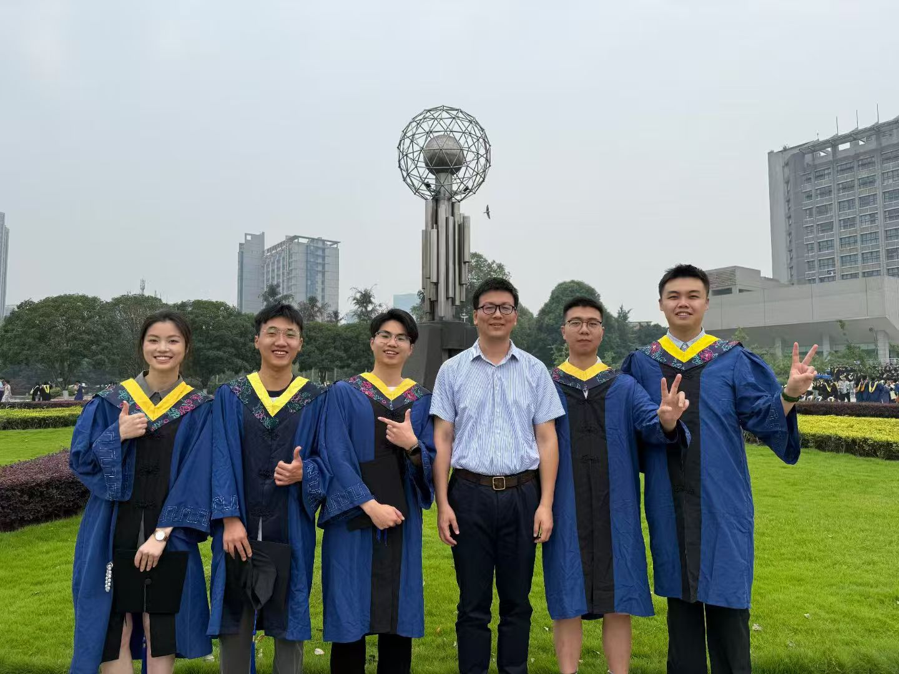

I am Xun Fu, a graduate student specializing in large-scale data mining and machine learning. My work focuses on developing scalable clustering, active and semi-supervised learning, human-machine interaction, and neural network.
My research has been published in various international conferences and journals. My goal is to develop advanced algorithms that address practical challenges in data mining.
Email: fuxun0529@163.com
Phone: +86 17381369260

Education
Master in Computer Science and Technology (09-2022 to 06-2025 expected)
Southwest Petroleum University, GPA: 3.89/5.00 (88.9/100.0)
Dissertation: Active Clustering Method for Large Scale Data
Advisors:
Bachelor in Electrical and Computer Engineering (09-2018 to 06-2022)
Southwest Petroleum University, GPA: 4.01/5.00 (90.1/100.0)
Honor: Excellent graduates from Sichuan Province
Honor: Postgraduate Recommendation
Location of where I am studying in (Google Map)
Research Experience
Leading Research: Clustering is inherently subjective because a dataset can be partitioned in various ways, and different users have different preferences for clustering outcomes. This subjectivity is a key motivation for developing semi-supervised clustering methods, which incorporate prior knowledge to align clustering results more closely with user preferences. Typically, this prior knowledge is represented in the form of pairwise constraints that indicate whether pairs of data points should belong to the same or different clusters. In traditional semi-supervised clustering algorithms, these constraints are assumed to be predetermined. However, in real-world scenarios, the process of selecting these constraints is often performed randomly, which can lead to redundancy and noise, thereby reducing the effectiveness of the clustering process. To address these limitations, active clustering leverages an active learning framework to select high-value constraints, enhancing the quality of clustering. However, existing active clustering methods face scalability issues when handling a large number of constraints, limiting their applicability in real-time applications. My research addresses this challenge from three main perspectives:
How to Select High-Value Constraints: I developed a novel active clustering algorithm (ACDM) that utilizes a batch sampling strategy to dynamically select pairs of nodes from a sparsely constructed graph of the original dataset. This method addresses the balance between uncertainty and representativeness.
Extensive experiments have demonstrated the algorithm's impressive performance, leading to its acceptance as a full paper at CIKM 2024. Additionally, I provided more comprehensive theoretical proofs and conducted extensive experiments in realistic clustering scenarios such as image clustering, voiceprint segmentation, and image segmentation, showcasing its potential application in numerous real-world settings. This work has been submitted to the TKDE journal and is currently under review.
How to Utilize Constraints in the Clustering Process Efficiently: I designed another novel active clustering algorithm (CSE) that constructs an initial clustering framework using nearest neighbor searches to capture the distribution patterns of the dataset. By analyzing this framework, we can identify high-value pairs based on uncertainty and representativeness, utilizing these pairs to form pairwise constraints that optimize the clustering framework. Experiments indicate that CSE surpasses existing methods in terms of clustering quality and scalability. This research has been submitted to SIGKDD 2025 and is currently under peer review.
How to Reduce Human Effort: I developed a novel constraint inference algorithm (DSL), which leverages the transitivity of must-link and cannot-link constraints through an innovative shortest-path reasoning method to infer new constraints. This approach significantly reduces the need for manual annotations and has been validated through detailed mathematical proofs and extensive experiments. This research has been submitted to Pattern Recognition and has already passed the first minor revision round.
A demonstration of my developed application of active clustering (youtube)
A demonstration of my developed application of active clustering (bilibili)
Participating Research:
Hierarchical Clustering for Large Scale Data Analysis: In this research, my contributions included writing a comprehensive review of related work and conducting experiments on accuracy and scalability. Our research findings have been accepted by DASSFA and Information Science.
Pattern Interestingness Evaluation: I designed an active learning-based framework to assess the interestingness of patterns, and I implemented the algorithm in code. This work has been submitted to the Journal of Nanjing University and is currently under review.
Accepted
2024: Xun Fu, Wen-Bo Xie*, Bin Chen, Tao Deng, Tian Zou, Xin Wang, "ACDM: An Effective and Scalable Active Clustering with Pairwise Constraint","Proceedings of the 32nd ACM International Conference on Information and Knowledge Management (CIKM)".
2024: Wen-Bo Xie*, Bin Chen, Xun Fu, Jun-Hao Shi, Yan-Li Lee, Xin Wang, "Cost-effective hierarchical clustering with local density peak detection", Information Science.
2024: Bin Chen, Wen-bo Xie*, Xun Fu, Heng-ji Zhang, Xin Wang, "Density-based scalable hierarchical clustering", Journal of Nanjing University.
2023: Wen-Bo Xie*, Bin Chen, Jun-Hao Shi, Yan-Li Lee, Xin Wang, Xun Fu, "Cost-Effective Clustering by Aggregating Local Density Peaks", International Conference on Database Systems for Advanced Applications (DASFAA).
Under Review
Xun Fu, Wen-Bo Xie*, "XXX", Proceedings of the 31st ACM SIGKDD Conference on Knowledge Discovery and Data Mining (KDD).
Xun Fu, Wen-Bo Xie*, Tao Deng, Tian Zou, Xin Wang, "An Active Constrained Clustering Aims to Improve the Clustering Quality and the Scalability", IEEE Transactions on Knowledge and Data Engineering.
Wen-Bo Xie, Xun Fu*, Bin Chen, Yan-Li Lee, Tao Deng, Tian Zou, Xin Wang, Zhen Liu, Jaideep Srivastava, "Data Skeleton Learning: Scalable Active Clustering with Sparse Graph Structures", Pattern Recognition.
Lu Wang, Xun Fu, Ling-Zhen Shen, Xing Jiang, Xin Wang*, "Pattern interestingness evaluation based on active learning", Journal of Nanjing University.
Skills
Programming Languages: Python, Java, C++, Matlab, R
Languages: Chinese (Native), English (IELTS: 6.5), Russian (Intermediate)
Information Technology Specialist (06-2021 to 08-2021)
Industrial and Commercial Bank of China (ICBC), Chengdu China
Managed data security and performance optimizations for the bank's large-scale data warehouse systems.
Teaching Assistant in Big Data Analysis (09-2020 to 01-2021)
Southwest Petroleum University, Chengdu China
Assisted in teaching and grading for undergraduate students in Big Data Analysis.
Web Developer (06-2020 to 08-2020)
Sichuan Aoyi Media Advertising Co. Ltd., Chengdu China
Implemented visual designs into live environments, enhancing user interactions and functionality.